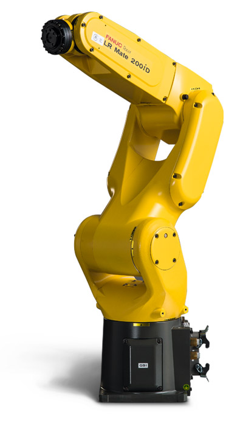

Krzywe Bézier w robotyce
Kacper Drążyk
https://kdrazyk.github.io
Czym są krzywe Bezier?
\[\begin{cases} x = f_1(t)\\ y = f_2(t)\\ z = f_3(t) \end{cases} \]
Gdzie są stosowane?

Trajektorie w robotyce